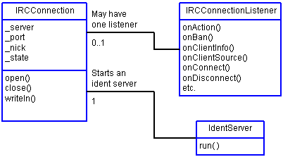
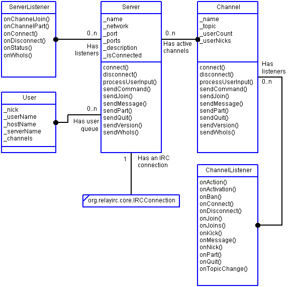

Relay IRC Developer's Guide |
David M. Johnson
Relay IRC Project
Updated for Relay-JFC Snapshot-000601 release
Contents
The architecture of Relay-JFC has changed significantly from the architecture that was discussed in the Dr. Dobb's Journal article. Relay-JFC is still based on a GUI-independent chat engine, but that chat engine has been redesigned to use a Java 1.1-style event architecture and Java Beans features such as property-change support. This redesign makes it easier to use the chat engine in your own programs.
This document discusses the two GUI-independent packages that make up the Relay IRC chat engine: org.relayirc.core and org.relayirc.chatengine. These are the packages that you will need to use if you wish to write your own IRC chat bot, applet or your own IRC client.
The org.relayirc.core package provides low level IRC connection functionality such as opening a connection, writing commands to a connection and closing a connection. Depends on the org.relayirc.util package and a Java 1.1 compatible subset of the Java class libraries. Why Java 1.1? We want to be able to use the Relay IRC core classes to write IRC applets, applets must run within web browsers and these days the major web browsers support only Java 1.1.

Figure 1: The org.relayirc.core Package
IRCConnection - Use an IRCConnection object to establish an IRC connection to an IRC server and to send commands and messages to that server.
IRCConnectionListener - Implement this interface to listen to an IRCConnection. An IRCConnection object will parse incoming data from the IRC server and will notify its listeners of each command that comes in.
The org.relayirc.chatengine provides higher level IRC classes such as Server, Channel and User. Depends on the org.relayirc.core and org.relayirc.util packages as well as a Java 1.1 compatible subset of the Java class libraries. With this package, you can work at a higher level of abstraction. The chat engine package provides classes that represent IRC servers, channels and users. You can choose to listen to server-level messages or to listen to an individual channel. The major players in the chat engine package are shown and discussed below.

Figure 2: The org.relayirc.chatengine Package
Server - Manages a connection to an IRC server, provides methods for sending commands/message to the server, creates Channel objects as needed and routes commands/messages to those channel objects.
ServerListener - Implement this to listen to a ChatEngine and you will be notified when the chat engine connects to the server, disconnects from the server, joins a channel, parts a channel and all chat engine status messages.
Channel - Manages connection to an IRC channel. Receives incoming channel commands/messages and notifies all listeners.
ChannelListener - Implement this interface to listen to a chat channel and you will be notified of all messages/commands, users joining, users parting, user actions and other events that occur within the channel.
User - Represents an IRC chat user. Used primarily () for holding the results of a WHOIS query.
This example shows you how to use the Relay IRC chat engine in a simple command line program. The program, named ChatLogger, connects to an IRC chat server, joins a chat channel and starts printing out the conversation that is going on in that channel. After printing out 10 messages, ChatLogger disconnects from the IRC server and exits.
Relay IRC programming is asynchronous: you send a request to the IRC server via a Server or a Channel object and then you listen for a response using either a ServerListner or a ChannelListener. This example illustrates the use of Server and Channel listeners.
Here is how ChatLogger works. Upon construction, ChatLogger creates a Server for connecting to irc.linux.com, adds itself as a listener of the Server and asks the server to connect. When ChatLogger is notified of a connection, in the onConnect() method, ChatLogger then asks the engine to join the #debian channel.
When ChatLogger is notified that #debian has been joined in onChannelJoin(), ChatLogger will create a ChannelLogger and add it as a listener of the new #debian Channel object. The ChannelLogger listens for messages from the Channel and after printing out 10 of them, it will request that ChatLogger disconnect. Note that ChannelLogger implements ChannelListener because it extends ChannelAdapter. Adapter classes make it easier to implement interfaces if you only want to implement a couple methods out of that interface.
Listing 1: ChatLogger.java
import org.relayirc.chatengine.*;
import org.relayirc.util.Debug;
///////////////////////////////////////////////////////////////
/**
* ChatLogger will connect to irc.linux.com, join the #debian channel,
* print out 10 messages and then quit.
*/
public class ChatLogger extends ServerAdapter {
private Server _server;
public static ChatLogger chatLogger; // Exposed for ChannelLogger
/**
* Construct ChatLogger. Creates server, adds self as listener
* connects to the chat server.
*/
public ChatLogger() {
System.out.println("ChatLogger - Relay IRC Programming Example");
_server = new Server("irc.linux.com",6667,"n/a","n/a");
_server.addServerListener(this);
_server.connect("logdaddy","logdaddy_","pbunyan","Paul Bunyan");
}
/** Once connected, join #chatzone. */
public void onConnect(ServerEvent event) {
System.out.println("Connected to "+event.getServer());
_server.sendJoin("#debian");
}
/** Once channel is joined, create ChannelLogger to listen to log it. */
public void onChannelJoin(ServerEvent event) {
Channel chan = (Channel)event.getChannel();
System.out.println("Joined "+chan);
chan.addChannelListener(new ChannelLogger());
}
/** Request disconnection from the chat server. */
public void stop() {
System.out.println("Stopping...");
_server .disconnect();
}
/** Once disconnected, print farewell message and exit. */
public void onDisconnect(ServerEvent event) {
System.out.println("Disconnected: good-bye!");
System.exit(0);
}
/** Main method. */
public static void main(String args[]) {
//Debug.setDebug(true);
chatLogger = new ChatLogger();
}
}
///////////////////////////////////////////////////////////////
/**
* ChannelLogger will print out 10 messages and then ask
* that ChatLogger to disconnect from the chat server.
*/
class ChannelLogger extends ChannelAdapter {
private int _msgCount = 0;
public void onMessage(ChannelEvent event) {
System.out.println(
event.getOriginNick()+" says "+(String)event.getValue());
if (_msgCount++ > 10) {
ChatLogger.chatLogger.stop();
}
}
}
The Relay-JFC GUI is implemented in the org.relayirc.swingui package, which depends on the org.relayirc.core, org.relayirc.chatengine, org.relayirc.util, org.relayirc.swingutil and the Java 2 v1.2 or later class libraries.
Currently, there is no documentation for the Relay-JFC GUI beyond that provided in the Javadoc generated API documentation.
The Relay-JFC GUI now includes an embeded JPython interpreter to support scripting.
Currently, there is no documentation for the Relay-JFC scripting beyond what you see here. Have patience, these things take time...
Copyright (c) 2000 David M. Johnson
$Revision: 1.6 $